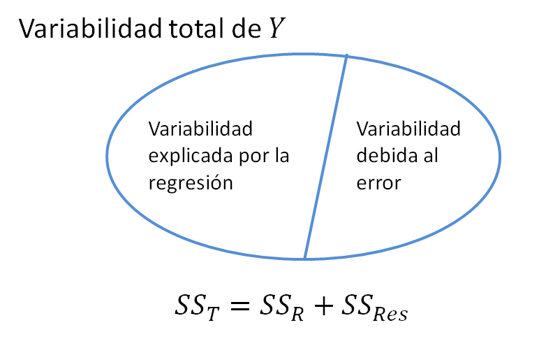
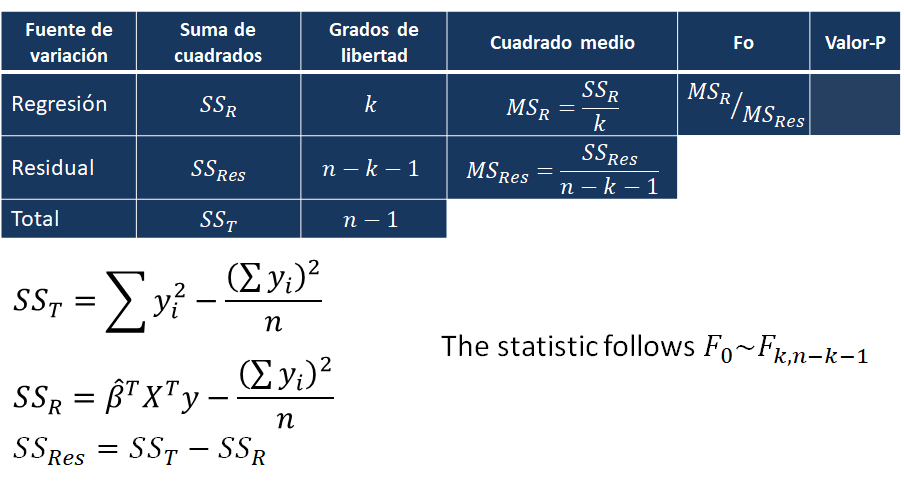
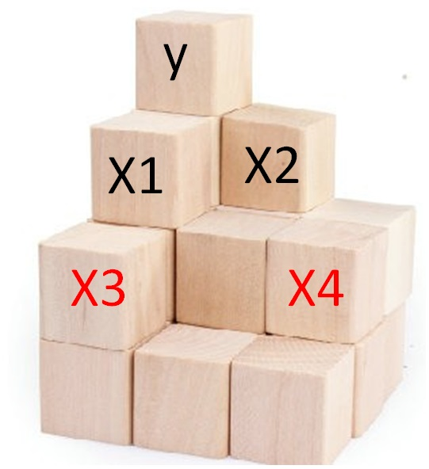

file <- "https://raw.githubusercontent.com/fhernanb/datos/master/propelente"
datos <- read.table(file=file, header=TRUE)
mod1 <- lm(Resistencia ~ Edad, data=datos)9 Pruebas de hipótesis parte II
En este capítulo se muestra como realizar pruebas de significancia en un modelo de regresión. Las pruebas aquí explicadas son las siguientes:
- Prueba sobre todos los coeficientes (prueba de significancia de la regresión).
- Prueba para comparar modelos anidados (prueba parcial F).
Prueba sobre todos los coeficientes
Supongamos que tenemos un modelo de regresión múltiple como se muestra a continuación.
\[\begin{align} y_i &\sim N(\mu_i, \sigma^2), \\ \mu_i &= \beta_0 + \beta_1 x_{1i} + \beta_2 x_{2i} + \cdots + \beta_k x_{ki}, \\ \sigma^2 &= \text{constante} \end{align}\]
Para este modelo nos podemos preguntar si alguna de las covariables aporta información al modelo o si ninguna aporta información al modelo. Esta duda se puede resumir simbólicamente por medio del siguiente conjunto de hipótesis.
\[\begin{align} H_0 &: \beta_1=\beta_2=\ldots=\beta_k=0 \\ H_1 &= \text{al menos uno de los} \, \beta_j\neq0 \, \text{con} \, j=1,2,\ldots,k, \end{align}\]
La prueba para analizar las hipótesis anteriores se llama prueba de significancia de la regresión.
En todo modelo de regresión vamos a tener una variabilidad Total (\(SS_T\)), una variabilidad explicada por el modelo de Regresión (\(SS_R\)) y una variabilidad Residual (\(SS_{Res}\)) que no logra ser explicada por el modelo, abajo una figura ilustrativa de las tres variabilidades.

En esta prueba la idea es determinar si la variabilidad explicada por la Regresión (\(SS_R\)) es una parte considerable de la variabilidad Total (\(SS_T\)) o no. Para realizar esta prueba se construye la tabla anova (analysis of variance) tal como se muestra a continuación.

Asumiendo \(H_0\) verdadera, la distribución del estadístico \(F_0\) es \(F_{k, n-k-1}\).
Ejemplo para RLS
Como ilustración vamos a usar los datos del ejemplo sobre la resistencia de piezas soldadas en función de la edad de la soldadura. ¿Será que la variable edad si ayuda a explicar la resistencia?, ¿será que la variable edad es significativa para el modelo?

Solución
En este problema nos interesa estudiar el siguiente conjunto de hipótesis.
\[\begin{align} H_0 &: \beta_{edad}=0 \\ H_1 &: \beta_{edad} \neq 0 \end{align}\]
Para responder esta pregunta vamos a aplicar la prueba de significancia de la regresión. Lo primero que se debe hacer es ajustar el modelo.
Luego de ajustar el modelo debemos calcular los elementos de la tabla anova, para eso podemos usar la función anova_table_lm del paquete model propuesto por Hernandez and Usuga (2026). Para instalar el paquete model podemos usar el siguiente código.
if (!require("remotes")) install.packages("remotes")
remotes::install_github("fhernanb/model")Luego de esto ya podemos usar la función anova_table_lm así:
library(model)
anova_table_lm(mod1)Anova Table
Sum Sq Df Mean Sq F value Pr(>F)
Regression 1527483 1 1527483 165.38 1.643e-10 ***
Residuals 166255 18 9236
Total 1693738 19
---
Signif. codes: 0 '***' 0.001 '**' 0.01 '*' 0.05 '.' 0.1 ' ' 1De la tabla anterior se observa que el valor-P es muy pequeño, por lo tanto hay evidencias para rechazar \(H_0: \beta_{edad}=0\), eso significa que la variable edad si ayuda a explicar la media de la variable respuesta.
Otra forma de aplicar la prueba de significancia de la regresión es usando la función summary la cual nos entrega una parte de la tabla anova anterior (no toda la tabla anova).
summary(mod1)
Call:
lm(formula = Resistencia ~ Edad, data = datos)
Residuals:
Min 1Q Median 3Q Max
-215.98 -50.68 28.74 66.61 106.76
Coefficients:
Estimate Std. Error t value Pr(>|t|)
(Intercept) 2627.822 44.184 59.48 < 2e-16 ***
Edad -37.154 2.889 -12.86 1.64e-10 ***
---
Signif. codes: 0 '***' 0.001 '**' 0.01 '*' 0.05 '.' 0.1 ' ' 1
Residual standard error: 96.11 on 18 degrees of freedom
Multiple R-squared: 0.9018, Adjusted R-squared: 0.8964
F-statistic: 165.4 on 1 and 18 DF, p-value: 1.643e-10En la última línea de la salida anterior tenemos la información de la prueba de hipótesis sobre significancia de la regresión. El valor-P de esta prueba es 1.643e-10 y por lo tanto podemos rechazar \(H_0\) a un nivel de significancia usual del 5%, eso significa que la variable edad si ayuda a explicar la resistencia.
Ejemplo para RLM
Como ilustración vamos a usar los datos del ejemplo 3.1 del libro de Montgomery (2006). En el ejemplo 3.1 los autores ajustaron un modelo de regresión lineal múltiple para explicar el Tiempo necesario para que un trabajador haga el mantenimiento y surta una máquina dispensadora de refrescos en función de las variables Número de Cajas y Distancia.
¿Será que las variables Número de Cajas y Distancia son significativas en el modelo?

Solución
En este problema nos interesa estudiar el siguiente conjunto de hipótesis.
\[\begin{align} H_0 &: \beta_{cant}=\beta_{dis}=0 \\ H_1 &= \text{al menos uno de los coefiencientes} \, \beta_{cant} \, \text{o} \, \beta_{dis} \, \text{es diferente de cero} \end{align}\]
Para responder esta pregunta vamos a aplicar la prueba de significancia de la regresión. Lo primero que se debe hacer es ajustar el modelo.
require(MPV)
colnames(softdrink) <- c('tiempo', 'cantidad', 'distancia')
mod2 <- lm(tiempo ~ cantidad + distancia, data=softdrink, x=TRUE)Luego de ajustar el modelo debemos calcular los elementos de la tabla anova, para eso usamos el siguiente código.
anova_table_lm(mod2)Anova Table
Sum Sq Df Mean Sq F value Pr(>F)
Regression 5550.8 2 2775.41 261.24 4.687e-16 ***
Residuals 233.7 22 10.62
Total 5784.5 24
---
Signif. codes: 0 '***' 0.001 '**' 0.01 '*' 0.05 '.' 0.1 ' ' 1De la tabla anterior se observa que el valor-P es muy pequeño por lo tanto hay evidencias para rechazar \(H_0: \beta_{cant}=\beta_{dis}=0\), eso significa que al menos una (o ambas) de las variables si ayudan a explicar la media de la variable respuesta.
Otra forma de aplicar la prueba de significancia de la regresión es usando la función summary la cual nos entrega una parte de la tabla anova anterior (no toda la tabla anova).
summary(mod2)
Call:
lm(formula = tiempo ~ cantidad + distancia, data = softdrink,
x = TRUE)
Residuals:
Min 1Q Median 3Q Max
-5.7880 -0.6629 0.4364 1.1566 7.4197
Coefficients:
Estimate Std. Error t value Pr(>|t|)
(Intercept) 2.341231 1.096730 2.135 0.044170 *
cantidad 1.615907 0.170735 9.464 3.25e-09 ***
distancia 0.014385 0.003613 3.981 0.000631 ***
---
Signif. codes: 0 '***' 0.001 '**' 0.01 '*' 0.05 '.' 0.1 ' ' 1
Residual standard error: 3.259 on 22 degrees of freedom
Multiple R-squared: 0.9596, Adjusted R-squared: 0.9559
F-statistic: 261.2 on 2 and 22 DF, p-value: 4.687e-16En la última línea de la salida anterior tenemos la información de la prueba de hipótesis sobre significancia de la regresión. El valor-P de esta prueba es 4.687e-16 y por lo tanto podemos rechazar \(H_0\) a un nivel de significancia usual del 5%, eso significa que al menos una de las dos covariables del modelo es significativa para explicar el tiempo medio.
El no rechazar \(H_0: \beta_1 = \beta_2 = \ldots = \beta_k = 0\) significa que ninguna de las variables aporta información para explicar la media de \(Y\). Lo que se debe hacer es buscar nuevas covariables que SI sean significativas.
El rechazar \(H_0: \beta_1 = \beta_2 = \ldots = \beta_k = 0\) significa que una, o dos, o tres, o cuatro, …, o que todas las \(k\) covariables son significativas. Pero, ¿cómo saber cuales variables son significativas?
Prueba para comparar modelos anidados
Esta prueba se usa para comparar modelos que comparten una estructura anidada.
A continuación se muestran dos modelos (reducido y completo) anidados a manera de ilustración.
Modelo reducido \[\begin{align} y_i &\sim N(\mu_i, \sigma^2), \\ \mu_i &= \beta_0 + \beta_1 x_{1i} + \beta_2 x_{2i}, \\ \sigma^2 &= \text{constante} \end{align}\]
Modelo completo \[\begin{align} y_i &\sim N(\mu_i, \sigma^2), \\ \mu_i &= \beta_0 + \beta_1 x_{1i} + \beta_2 x_{2i} + \beta_3 x_{3i} + \beta_4 x_{4i}, \\ \sigma^2 &= \text{constante} \end{align}\]
La pregunta que surge aquí es: ¿vale la pena incluir las variables \(x_3\) y \(x_4\) simultáneamente al modelo reducido? ¿esas variables mejoran el modelo reducido? ¿será mejor el modelo reducido o el modelo completo?
Los interrogantes anteriores se pueden resumir simbólicamente así:
\[\begin{align} H_0 &: \beta_3=\beta_4=0 \\ H_1 &= \text{al menos uno de los coefiencientes} \, \beta_{3} \, \text{o} \, \beta_{4} \, \text{es diferente de cero} \end{align}\]
Para realizar esta prueba se usa el siguiente estadístico
\[ F_0 = \frac{\frac{SS_R(complete) - SS_R(reduced)}{p_1-p_0}}{MS_{Res}}, \] donde \(SS_R(complete)\) es la suma de cuadrados de la regresión para el modelo completo, \(SS_R(reduced)\) es la suma de cuadrados de la regresión para el modelo reducido, \(p_1\) es el número de \(\beta\)’s en el modelo completo, \(p_0\) es el número de \(\beta\)’s en el modelo reducido y \(MS_{Res}\) es la estimación de \(\sigma^2\) en el modelo completo. La distribución del estadístico \(F_0\) es:
- \(F_{p_1-p_0, n-p_1}\) si \(H_0\) es cierta.
- \(F_{p_1-p_0, n-p_1, \lambda}\) si \(H_1\) es cierta, siendo \(\lambda\) el parámetro de no centralidad de una distribución F.
Para conocer la expresión de \(\lambda\) se recomienda revisar la página 90 de Montgomery et al. (2012) y los comentarios al respecto.
Ejemplo
Usando la base de datos table.b4 del paquete MPV de Braun and MacQueen (2023), queremos comparar dos modelos anidados:
- el modelo reducido con la fórmula
y ~ x1 + x2, - y el modelo completo con la fórmula
y ~ x1 + x2 + x3 + x4.
¿Será que la inclusión simultánea de las variables \(x_3\) y \(x_4\) mejora el modelo para explicar la variable respuesta \(y\)? Use \(\alpha=0.03\) para concluir.

Solución
Primero veamos los datos.
require(MPV)
data(table.b4)
head(table.b4, n=4) y x1 x2 x3 x4 x5 x6 x7 x8 x9
1 29.5 5.0208 1 3.531 1.500 2 7 4 62 0
2 27.9 4.5429 1 2.275 1.175 1 6 3 40 0
3 25.9 4.5573 1 4.050 1.232 1 6 3 54 0
4 29.9 5.0597 1 4.455 1.121 1 6 3 42 0Ajustemos los dos modelos de interés.
redu_mod <- lm(y ~ x1 + x2, data=table.b4, x=TRUE)
comp_mod <- lm(y ~ x1 + x2 + x3 + x4, data=table.b4, x=TRUE)En este ejercicio nos interesa estudiar el siguiente conjunto de hipótesis.
\[\begin{align} H_0 &: \beta_3 = \beta_4 = 0 \\ H_1 &= \text{al menos uno de los coefiencientes} \, \beta_{3} \, \text{o} \, \beta_{4} \, \text{es diferente de cero} \end{align}\]
Ahora construyamos el estadístico \(F_0\).
n <- 24 # numero de observaciones
p0 <- 3 # numero de betas en modelo reducido
p1 <- 5 # numero de betas en modelo completo
ssr_reduced <- sum(table.b4$y) - sum(redu_mod$residuals^2)
ssr_complete <- sum(table.b4$y) - sum(comp_mod$residuals^2)
ms_res <- summary(comp_mod)$sigma^2
F0 <- ((ssr_complete - ssr_reduced) / (p1-p0)) / ms_res
F0[1] 0.2831532Para tomar la decisión podemos hacerlo de dos formas: usando un valor de referencia o usando el valor-P.
- Usando el valor de referencia
Buscamos el cuantil \(f_{\alpha, p_1-p_0, n-p_1}\) usando el \(\alpha=0.03\) dado en el enunciado.
qf(p=0.03, df1=p1-p0, df2=n-p1, lower.tail=FALSE)[1] 4.241262Como \(F_0=0.2831\) es menor que \(f_{\alpha, p_1-p_0, n-p_1}=4.2412\), por lo tanto no hay evidencias para rechazar \(H_0\).
- Usando el valor-P
Buscamos el área a la derecha de \(F_0=0.2831\) en una distribución F con \(p_1-p_0\) y \(n-p_1\) grados de libertad.
pf(q=0.2831, df1=p1-p0, df2=n-p1, lower.tail=FALSE)[1] 0.7565673Como el valor-P es 0.7566 y es mayor que el nivel de significancia \(\alpha=0.03\), no hay evidencias para rechazar \(H_0\).
En conclusión, las dos variables \(x_3\) y \(x_4\) no mejoran el modelo. Es mejor un modelo sólo con \(x_2\) y \(x_1\).
Exploremos la tabla de resumen para el modelo completo.
summary(comp_mod)
Call:
lm(formula = y ~ x1 + x2 + x3 + x4, data = table.b4, x = TRUE)
Residuals:
Min 1Q Median 3Q Max
-4.0005 -1.8955 0.0506 1.8327 5.1112
Coefficients:
Estimate Std. Error t value Pr(>|t|)
(Intercept) 9.8409 3.2571 3.021 0.00702 **
x1 2.4375 0.6704 3.636 0.00176 **
x2 6.4373 3.8206 1.685 0.10836
x3 0.3233 0.4324 0.748 0.46377
x4 -0.2177 3.7475 -0.058 0.95429
---
Signif. codes: 0 '***' 0.001 '**' 0.01 '*' 0.05 '.' 0.1 ' ' 1
Residual standard error: 2.893 on 19 degrees of freedom
Multiple R-squared: 0.8082, Adjusted R-squared: 0.7679
F-statistic: 20.02 on 4 and 19 DF, p-value: 1.332e-06Si miramos la tabla anterior podríamos caer en la tentación de decir que las variables \(x_4\), \(x_3\) y \(x_2\) no aportan al modelo, ya que sus valores-P de contribución individual son muy grandes. Sin embargo, esto es una TRAMPA, nos podemos equivocar. Por esa razón, obtengamos ahora la tabla de resumen para el modelo reducido.
summary(redu_mod)
Call:
lm(formula = y ~ x1 + x2, data = table.b4, x = TRUE)
Residuals:
Min 1Q Median 3Q Max
-4.7639 -1.9454 -0.1822 1.8068 5.0423
Coefficients:
Estimate Std. Error t value Pr(>|t|)
(Intercept) 10.0418 2.9585 3.394 0.00273 **
x1 2.7134 0.4849 5.595 1.49e-05 ***
x2 6.1643 3.1864 1.935 0.06663 .
---
Signif. codes: 0 '***' 0.001 '**' 0.01 '*' 0.05 '.' 0.1 ' ' 1
Residual standard error: 2.792 on 21 degrees of freedom
Multiple R-squared: 0.8025, Adjusted R-squared: 0.7837
F-statistic: 42.67 on 2 and 21 DF, p-value: 4.007e-08La variable \(x_2\) que en la tabla de modelo completo aparecía como no significativa ahora si aparece como significativa a un nivel \(\alpha=0.10\). Este fenómeno se llama efecto de enmascaramiento. Al tener en el modelo \(x_3\) y \(x_4\), ellas opacan la importancia o enmascaran a la variable \(x_2\).
Warning
Nunca use los resultados del summary para juzgar si varias variables son importantes o no, use la prueba para modelos anidados. Recuerde el efecto de enmascaramiento.
** Lo que viene a continuación es opcional**
Ahora vamos a calcular el parámetro de no centralidad \(\lambda\). Recuerde revisar la página 90 de Montgomery et al. (2012) para conocer su expresión.
beta2 <- matrix(c(0.3233333, -0.2176622), ncol=1)
x1 <- comp_mod$x[, 1:3]
x2 <- comp_mod$x[, 4:5]
a1 <- t(beta2) %*% t(x2)
a2 <- diag(n) - x1 %*% solve(t(x1) %*% x1) %*% t(x1)
a3 <- x2 %*% beta2
lambda <- (a1 %*% a2 %*% a3) / summary(comp_mod)$sigma^2
lambda [,1]
[1,] 0.5663064Ahora vamos a calcular el valor-P de la prueba usando la distribución F no central y la distribución F (usual) así:
pf(q=F0, df1=p1-p0, df2=n-p1, ncp=lambda, lower.tail=FALSE)[1] 0.8088857pf(q=F0, df1=p1-p0, df2=n-p1, lower.tail=FALSE)[1] 0.7565282Usando el último valor-P que es mayor que un nivel de significancia \(\alpha\), no hay evidencias para rechazar \(H_0: \beta_3 = \beta_4 = 0\), y por lo tanto podemos concluir que las variables \(x_3\) y \(x_4\) no mejoran el modelo.
Función anova
La función anova permite realizar pruebas de hipótesis como las mostradas en las secciones anteriores, en particular la función sirve para:
- comparar secuencialmente las variables de un modelo.
- comparar modelos anidados.
El método S3 anova.lm (o simplemente anova) tiene la estructura mostrada a continuación.
anova(object, test, scale=0)Los argumentos de esta función son:
object: un objeto de la claselm.test: una cadena de caracteres indicando el tipo de prueba,F,ChisqoCp, el valor por defecto esF.scale: valor de la estimación de \(\sigma^2\). Cuando es igual a cero se usa el estimador del modelo con más parámetros.
La función anova se puede aplicar a un solo modelo y el resultado será una prueba de hipótesis secuencial en las variables.
anova se puede aplicar a varios modelos y el resultado será una comparación de modelos.
A continuación se muestran dos ejemplos en los cuales se ilustra la utilidad de la función anova.
Ejemplo
En este ejemplo se mostrará la segunda utilidad de la función anova. Para esto vamos a utilizar la base de datos Cars93 del paquete MASS. El objetivo es construir un modelo para explicar la media del Price de los autos en función de las variables Horsepower, Type y Weight. Usar un nivel de significancia \(\alpha=0.07\).
Solución
La solución de este ejercicio tendrá dos partes, en la primera se construirán varios modelos, iniciando con uno sin covariables (mod0) hasta uno con todas las covariables (mod3). En la segunda parte se analizará el modelo con todas las covariables directamente.
Primera parte
A continuación el código para crear y comparar los modelos sin covariables y el modelo con solo Horsepower.
library(MASS)
mod0 <- lm(Price ~ 1, data=Cars93)
mod1 <- lm(Price ~ Horsepower, data=Cars93)
anova(mod0, mod1)Analysis of Variance Table
Model 1: Price ~ 1
Model 2: Price ~ Horsepower
Res.Df RSS Df Sum of Sq F Pr(>F)
1 92 8584.0
2 91 3250.9 1 5333.1 149.29 < 2.2e-16 ***
---
Signif. codes: 0 '***' 0.001 '**' 0.01 '*' 0.05 '.' 0.1 ' ' 1De la salida anterior se tiene que el valor-P es < 2.2e-16 y por lo tanto se concluye que la variable Horsepower mejora el modelo (la misma conclusión se pudo obtener del summary).
Ahora vamos a crear y comparar el modelo con sólo Horsepower con el modelo con Horsepower y Type.
mod2 <- lm(Price ~ Horsepower + Type, data=Cars93)
anova(mod1, mod2)Analysis of Variance Table
Model 1: Price ~ Horsepower
Model 2: Price ~ Horsepower + Type
Res.Df RSS Df Sum of Sq F Pr(>F)
1 91 3250.9
2 86 2758.1 5 492.81 3.0733 0.01337 *
---
Signif. codes: 0 '***' 0.001 '**' 0.01 '*' 0.05 '.' 0.1 ' ' 1De la salida anterior se tiene que el valor-P es 0.01337 y por lo tanto se concluye que el modelo mod2 con dos covariables explica mejor la variable Price.
Ahora vamos a crear y comparar el modelo con Horsepower y Type con el modelo con las tres covariables.
mod3 <- lm(Price ~ Horsepower + Type + Weight, data=Cars93)
anova(mod2, mod3)Analysis of Variance Table
Model 1: Price ~ Horsepower + Type
Model 2: Price ~ Horsepower + Type + Weight
Res.Df RSS Df Sum of Sq F Pr(>F)
1 86 2758.1
2 85 2751.3 1 6.7934 0.2099 0.648De esta última salida vemos que el valor-P es 0.648, esto indica que la inclusión de la variable Weight no mejora el modelo mod2 (la misma conclusión se pudo obtener del summary).
Segunda parte
En esta segunda parte del ejemplo se usará la función anova directamente sobre el modelo completo mod3, a continuación los resultados.
anova(mod3)Analysis of Variance Table
Response: Price
Df Sum Sq Mean Sq F value Pr(>F)
Horsepower 1 5333.1 5333.1 164.7661 < 2e-16 ***
Type 5 492.8 98.6 3.0451 0.01411 *
Weight 1 6.8 6.8 0.2099 0.64803
Residuals 85 2751.3 32.4
---
Signif. codes: 0 '***' 0.001 '**' 0.01 '*' 0.05 '.' 0.1 ' ' 1En la tabla anterior aparecen los resultados de una prueba de hipótesis secuencial a partir de la fórmula de mod3. La fórmula de mod3 es Price ~ Horsepower + Type + Weight, por lo tanto en la primera línea de la tabla aparece la variable Horsepower, luego en la segunda aparece Type y así hasta la última variable Weight. El valor-P reportado en la primer línea es < 2e-16, esto indica que el modelo con Horsepower es mejor que el modelo sin covariables; el valor-P de la segunda línea es 0.01411, esto indica que es mejor un modelo con las covariables Horsepower y Type; por último el valor-P de la tercera línea es 0.64803, esto indica que la variable Weight no mejora el modelo, es decir, que es mejor un modelo con Horsepower y Type solamente.
Ejemplo
Usando la base de datos table.b4 del paquete MPV propuesto por Braun and MacQueen (2023), queremos comparar dos modelos anidados:
- el modelo reducido con la fórmula
y ~ x1 + x2, - y el modelo completo con la fórmula
y ~ x1 + x2 + x3 + x4.
¿Será que la inclusión simultánea de las variables \(x_3\) y \(x_4\) mejora el modelo para explicar la variable respuesta \(y\)? Use \(\alpha=0.03\) para concluir.
Solución
Para este ejemplo vamos a usar los datos que se muestran a continuación.
require(MPV)
data(table.b4)
head(table.b4, n=4) y x1 x2 x3 x4 x5 x6 x7 x8 x9
1 29.5 5.0208 1 3.531 1.500 2 7 4 62 0
2 27.9 4.5429 1 2.275 1.175 1 6 3 40 0
3 25.9 4.5573 1 4.050 1.232 1 6 3 54 0
4 29.9 5.0597 1 4.455 1.121 1 6 3 42 0Ahora vamos a ajustar ambos modelos usando el siguiente código.
mod1 <- lm(y ~ x1 + x2, data=table.b4)
mod2 <- lm(y ~ x1 + x2 + x3 + x4, data=table.b4)El objetivo en este ejercicio analizar el siguiente conjunto de hipótesis.
\[H_0: \text{las variables x3 y x4 no mejoran el modelo},\] \[H_A: \text{al menos una de ellas si mejora el modelo}\]
Para comparar los dos modelos usamos la siguiente instrucción.
anova(mod1, mod2, test='F')Analysis of Variance Table
Model 1: y ~ x1 + x2
Model 2: y ~ x1 + x2 + x3 + x4
Res.Df RSS Df Sum of Sq F Pr(>F)
1 21 163.71
2 19 158.98 2 4.7384 0.2832 0.7565De la salida anterior se observa que el valor-P de la prueba es de 0.7565, usando un nivel de significancia del 5%, se concluye que la inclusión de las variables \(x_3\) y \(x_4\) no mejoran el modelo.
summary versus anova
La función summary permite evaluar el efecto de una variable asumiendo que las restantes variables siguen en el modelo, esto es llamado prueba de hipótesis marginal. Cuando se tiene una variable cualitativa (con \(k\) niveles) dentro del modelo, ella aparecerá en la tabla del summary por medio de \(k-1\) variables indicadoras y por lo tanto se tendrán \(k-1\) valores-P asociados. Usar esos valores-P para decidir si una variable cualitativa es importante en el modelo puede ser engañoso, a continuación un ejemplo de esta situación.
Ejemplo
El ejemplo aquí mostrado está basado en una pregunta de StackOverFlow.
El ejemplo consiste en simular un conjunto de 30 valores de \(y \sim N(\mu, 1)\), donde las observaciones 1 a 10 tienen \(\mu=0\), las observaciones 11 a 20 tienen \(\mu=-0.5\) y las restantes diez tienen \(\mu=0.5\). Para diferenciar las observaciones se tendrá la variable de agruación cualitativa g que contendrá las letras A, B y C diez veces cada una. El código para simular los datos se muestra a continuación.
set.seed(8867) # this makes the example exactly reproducible
y <- c(rnorm(10, mean=0, sd=1),
rnorm(10, mean=-0.5, sd=1),
rnorm(10, mean=0.5, sd=1))
g <- rep(c("A", "B", "C"), each=10)¿Será la variable cualitativa g significativa en un modelo de regresión?
Solución
Vamos a ajustar el modelo con fórmula y ~ g para estudiar el efecto de la agrupación g en la media de la variable respuesta \(y\).
model <- lm(y ~ g)Obviamente esperamos concluir que la media de la variable \(y\) dependa de la variable de agrupación g. Para esto vamos a explorar el resultado con la función summary.
summary(model)
Call:
lm(formula = y ~ g)
Residuals:
Min 1Q Median 3Q Max
-2.59080 -0.54685 0.04124 0.79890 2.56064
Coefficients:
Estimate Std. Error t value Pr(>|t|)
(Intercept) -0.4440 0.3855 -1.152 0.260
gB -0.9016 0.5452 -1.654 0.110
gC 0.6729 0.5452 1.234 0.228
Residual standard error: 1.219 on 27 degrees of freedom
Multiple R-squared: 0.2372, Adjusted R-squared: 0.1807
F-statistic: 4.199 on 2 and 27 DF, p-value: 0.02583De la salida anterior vemos que los efectos gB y gC tienen valores-P altos, superiores al usual 5%, y por lo tanto estaríamos tentados a decir que la variable g no tiene efecto sobre la media de \(y\). El lector podría encontrar esto un poco desconcertante.
Vamos a realizar el análisis pero ahora con la función anova.
anova(model)Analysis of Variance Table
Response: y
Df Sum Sq Mean Sq F value Pr(>F)
g 2 12.484 6.2418 4.199 0.02583 *
Residuals 27 40.135 1.4865
---
Signif. codes: 0 '***' 0.001 '**' 0.01 '*' 0.05 '.' 0.1 ' ' 1En la fila donde aparece la variable g tenemos el resultado de la prueba de hipótesis
\[H_0: \text{la variable g no influye en la media de y},\] \[H_A: \text{la variable g si influye en la media de y}\]
El valor-P de esta prueba es de 0.02583, esto indica que hay evidencias para rechazar \(H_0\), es decir, encontramos que la variable g si influye sobre la media de la variable \(y\).
Cuando se quiera explorar el efecto de una variable cualitativa en un modelo es mejor usar la función
anova que los resultados del summary.
Prueba razón de verosimilitud
Esta prueba evalúa la bondad de ajuste de dos modelos estadísticos competitivos en función de la razón de sus verosimilitudes, específicamente uno encontrado por maximización en todo el espacio de parámetros y otro encontrado después de imponer alguna restricción (\(H_0\)).
El estadístico de la prueba razón de verosimilitud se muestra a continuación.
\[ \lambda = -2 \log \left[ \frac{L(\Theta_0)}{L(\Theta)} \right] = -2 \left[ l(\Theta_0)-l(\Theta) \right], \]
donde \(L\) representa el valor de la verosimilitud y \(l\) el valor de log-verosimilitud. Bajo la hipótesis nula, \(\lambda \sim \chi^2_{k}\) donde \(k\) es la diferencia entre el número de parámetros de los modelos comparados.
Ejemplo
Usando la base de datos table.b4 del paquete MPV propuesto por Braun and MacQueen (2023), queremos comparar dos modelos anidados:
- el modelo reducido con la fórmula
y ~ x1 + x2, - y el modelo completo con la fórmula
y ~ x1 + x2 + x3 + x4.
¿Será que la inclusión simultánea de las variables \(x_3\) y \(x_4\) mejora el modelo para explicar la variable respuesta \(y\)? Use \(\alpha=0.03\) para concluir.
Solución
Para este ejemplo vamos a usar los datos que se muestran a continuación.
require(MPV)
data(table.b4)
head(table.b4, n=4) y x1 x2 x3 x4 x5 x6 x7 x8 x9
1 29.5 5.0208 1 3.531 1.500 2 7 4 62 0
2 27.9 4.5429 1 2.275 1.175 1 6 3 40 0
3 25.9 4.5573 1 4.050 1.232 1 6 3 54 0
4 29.9 5.0597 1 4.455 1.121 1 6 3 42 0Ahora vamos a ajustar ambos modelos usando el siguiente código.
mod0 <- lm(y ~ x1 + x2, data=table.b4)
mod1 <- lm(y ~ x1 + x2 + x3 + x4, data=table.b4)El objetivo en este ejercicio analizar el siguiente conjunto de hipótesis.
\[H_0: \text{las variables x3 y x4 no mejoran el modelo},\] \[H_A: \text{al menos una de ellas si mejora el modelo}\]
Para aplicar la prueba razón de verosimilitud usamos el siguiente código. Los grados de libertad en esta prueba son 2 porque esa es la diferencia entre el número de parámetros de los modelos.
lambda <- -2 * (logLik(mod0) - logLik(mod1))
lambda'log Lik.' 0.7048811 (df=4)pchisq(q=lambda, df=2, lower.tail=FALSE)'log Lik.' 0.7029704 (df=4)Como el valor-P es grande, no hay evidencias para rechazar \(H_0: \beta_3 = \beta_4 = 0\), y por lo tanto podemos concluir que las variables \(x_3\) y \(x_4\) no mejoran el modelo.
Comparaciones múltiples
En esta sección se muestra como utilizar el paquete multcomp propuesto por Hothorn et al. (2026) que está basado en el libro “Multiple comparisons using R” de Frank Bretz (2010) para estudiar pruebas de hipótesis múltiples.
Ejemplo
Usando la base de datos table.b4 del paquete MPV de Braun and MacQueen (2023), queremos ajustar el siguiente modelo:
\[\begin{align} y_i &\sim N(\mu_i, \sigma^2), \\ \mu_i &= \beta_0 + \beta_1 x_{1i} + \beta_2 x_{2i} + \beta_3 x_{3i} + \beta_4 x_{4i}, \\ \sigma^2 &= \text{constante} \end{align}\]
¿Será que la inclusión simultánea de las variables \(x_3\) y \(x_4\) mejora el modelo para explicar la variable respuesta \(y\)? Use \(\alpha=0.03\) para concluir.
Solución
Lo primero que debemos hacer es ajustar el modelo de interés.
require(MPV)
data(table.b4)
mod <- lm(y ~ x1 + x2 + x3 + x4, data=table.b4)
coef(mod)(Intercept) x1 x2 x3 x4
9.8408825 2.4374996 6.4373377 0.3233333 -0.2176622 En este ejemplo nos interesa estudiar las siguientes dos hipótesis simultáneamente (no individualmente).
\[\begin{align*} H_0 &: \beta_{3} = 0 & H_0 &: \beta_{4} = 0 \\ H_A &: \beta_{3} \neq 0 & H_A &: \beta_{4} \neq 0 \end{align*}\]
Los dos conjuntos de hipótesis anteriores se pueden escribir matricialmente usando una matriz de constrates \(\boldsymbol{C}\) que multiplica al vector de parámetros \(\boldsymbol{\beta}\). A continuación se muestra la matriz \(\boldsymbol{C}\) que permite obtener las dos parejas de hipótesis anteriores:
\[ \boldsymbol{C} \boldsymbol{\beta} = \begin{pmatrix} 0 & 0 & 0 & 1 & 0 \\ 0 & 0 & 0 & 0 & 1 \end{pmatrix} \begin{pmatrix} \beta_0 \\ \beta_1 \\ \beta_2 \\ \beta_3 \\ \beta_4 \\ \end{pmatrix} = \begin{pmatrix} \beta_3 \\ \beta_4 \end{pmatrix} \]
Los lados derechos de las hipótesis son constantes y se escriben como un vector \(\boldsymbol{a}=(0, 0)^\top\). Teniendo definida la matriz \(\boldsymbol{C}\), el vector \(\boldsymbol{a}\) la prueba simultánea de las hipótesis se puede hacer de la siguiente manera.
library(multcomp)Warning: package 'multcomp' was built under R version 4.6.1Warning: package 'mvtnorm' was built under R version 4.6.1C <- matrix(c(0, 0, 0, 1, 0,
0, 0, 0, 0, 1), ncol=5, byrow=TRUE)
mult_test <- glht(model=mod, linfct=C, alternative='two.sided', rhs=c(0, 0))
summary(mult_test, test = adjusted(type="single-step"))
Simultaneous Tests for General Linear Hypotheses
Fit: lm(formula = y ~ x1 + x2 + x3 + x4, data = table.b4)
Linear Hypotheses:
Estimate Std. Error t value Pr(>|t|)
1 == 0 0.3233 0.4324 0.748 0.704
2 == 0 -0.2177 3.7475 -0.058 0.998
(Adjusted p values reported -- single-step method)De la salida anterior se obtiene que los dos valores-P “ajustados” (ver sección 2.1.2 de Frank Bretz (2010)) son:
\[
q_1 = 0.704 \qquad q_2 = 0.998
\] Esto significa que no hay evidencias para rechazar \(H_0 : \beta_{3} = 0\) ni evidencias para rechazar \(H_0 : \beta_{4} = 0\) porque ambos valores-P “ajustados” fueron mayores del nivel de significancia de 0.03. En otras palabras, ni x3 ni x4 aportan información para explicar la media de \(y\).
Warning
Si un valor-P “ajustado” es menor que el \(\alpha\), se rechaza su correspondiente hipótesis nula \(H_0\), pero si el valor-P “ajustado” es mayor que el \(\alpha\), no se rechaza \(H_0\). En una aplicación es posible que se rechacen todas/algunas/ninguna de las \(H_0\).